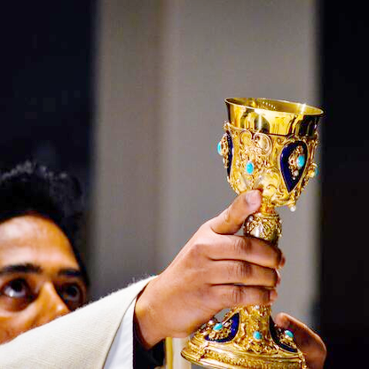

Alien
ROCK
indoor climbing
At Alien Rock we love competition
We have a winter bouldering league series, consisting of 4 rounds held between October and March each year
How to get involved
Competition rules and information
Competition dates
The David Cassidy Veteran's Cup
Presented to the boulder league winner of the Veterans / Over 40 competition, this cup was donated in January 2005 in memory of David Cassidy. David was a regular and enthusiastic climber at alien rock from the third day of opening in 1994 until his death in a climbing accident at Dunkeld on 9th July 2004. He had often entered the Veterans competition and it was for this reason that his colleagues at the Scottish Executive donated the cup.

The Susie Carmichael Memorial Quaich
Presented to the female winner of the boulder league. It was first presented to the top woman in 2006 after being donated by family and friends of Susie Carmichael, a former regular competitor. A keen all round climber, Susie was well known at alien rock for her enthusiasm and sense of adventure and made many friends. She died after a solo winter mountaineering accident in the Highlands.
The alien rock Men's Trophy
First presented after the winter series of 2008, it has been engraved with the names of the previous male winners.

The alien rock Golden Hold
The original trophy at alien rock has recorded the names of all league winners from 2002 onwards. An original alien rock manufactured hold, it is coated in real gold leaf! Previous winners all the way back to 1994 have unfortunately been lost in the mist of climbing history.